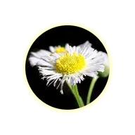

Leuchten

Erzeugt einen einfarbigen Lichtschein um die Form der Ebene. Mit Härte wird aus dem weichen Verlauf eine feste Kontur.
Glühen zeichnet einen Lichthof um die Außenseite der Form der Ebene. Mit Radius legst du fest, wie weit er reicht, mit Farbe seine Farbe und mit Alpha, wie stark er ist. Härte wandelt den Lichthof von einem weichen Verlauf (niedrig) in eine feste Kontur (hoch) um. Der Mischmodus steht standardmäßig auf Negativ multiplizieren, was den Bereich um die Form aufhellt. Normal malt die Farbe unverändert.
- Animiere den Radius nach oben und unten für ein pulsierendes Glühen.
- Für ein Glühen, das von den hellen Stellen eines Bildes kommt statt von seiner Form, nutze Lichtglühen oder Weiches Glühen.
Einstellungen
| Einstellung | Typ | Bereich | Standard |
|---|---|---|---|
| Radius | Zahl | 0 bis 400 | 100 |
| Alpha | Zahl | 0% bis 100% | 75% |
| Härte | Zahl | 0 bis 1 | 0.5 |
| Farbe | Farbe | – | #FFFFAA |
| Mischmodus | Auswahl | Normal, Multiplizieren, Negativ multiplizieren | Negativ multiplizieren |